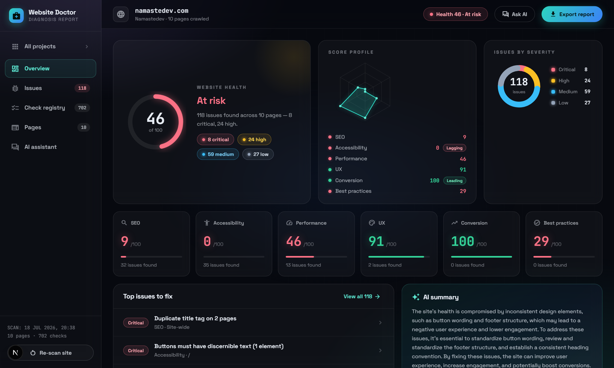
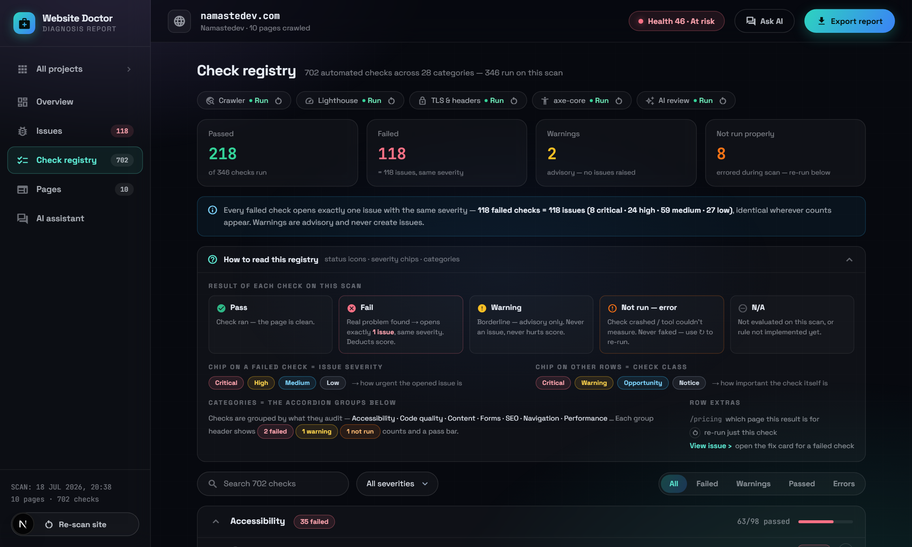

An AI-powered website QC platform. Paste a URL — get a full health diagnosis: real crawling, 60+ automated checks, Lighthouse, axe-core, security probes, and AI-written fixes tied to the exact broken elements.
A missing security header, an unlabeled booking form, a 4 MB hero image — none of it shows on the surface. The owner sees a "working" site; visitors bounce, screen-reader users give up, Google ranks it down.
A professional audit costs $300–$1000, takes days, and arrives as a PDF of jargon. For 200M+ small-business sites, that math never works — so audits simply don't happen.
Free checkers scan one page, print generic advice ("optimize your images"), hide their failures, and never tell a developer WHICH element to change or WHAT code to paste.
The gap: nothing between a $0 toy and a $1000 consultant — no tool that finds real problems, proves them with evidence, and hands over the exact fix.
Out of reach for the businesses that need them most.
Real crawl of up to 10 pages, 60+ checks, Lighthouse, axe-core, security + TLS — automatically, for the cost of a coffee's worth of compute.
Findings without fixes just create anxiety.
Business impact in plain language, AI-written paste-in code, and the actual HTML of the offending element with its selector. Search, paste, done.
Silent failures dressed up as green ticks.
Every failed check = exactly one issue, counts reconcile everywhere; anything that couldn't run says so in orange with a one-click re-run. Never a fake pass.
One input. No setup, no snippet to install, no account gymnastics.
Headless Chromium visits up to 10 pages — real navigation, screenshots, full HTML, response headers. Live progress streams to the screen.
60+ rule checks + Lighthouse (LCP/CLS/TBT) + axe-core accessibility + security headers, TLS cert, broken links — per page.
The model reviews each screenshot like a senior designer, audits the markup, checks cross-page consistency, and writes an executive summary.
Every failed check becomes one prioritized issue: impact, paste-in code, and the exact broken elements captured from the page.
Mark resolved, re-run single checks to confirm fixes, ask the AI assistant anything about the findings, export the PDF for the client.
crawl → audit → AI → issues → fixes → verify — a full quality loop, not a one-shot report.

Reviews every page's real screenshot like a senior designer — CTA contrast, hierarchy, trust signals — findings join the issue pipeline with full 1:1 rigor.
Reads real extracted DOM data and catches what static rules can't: weak titles, mismatched schema, suspicious anchors — grounded, never invented.
Writes each fix card from the actual offending element's HTML — page-specific paste-in code, not generic advice.
Chat answers strictly from stored analysis and refuses the rest. Provider-agnostic (Groq/Gemini/any OpenAI-compatible), zod-validated JSON, and self-healing model fallback when free-tier quotas run dry.

Trust is the product. If users can't trust the numbers, an audit tool is decoration.
Deployed and clickable: live demo self-seeds two scanned sites — judges can open reports, re-run checks, and chat with the analysis immediately.
We treat rate limits like failed checks: transparently. A QC tool that fakes its own results can't be trusted to QC anything.
One file. Zero code changes. Full potential.
active sites; wedge = agencies turning "trust us" into branded, evidence-backed reports with fixes
free scans → paid monitoring, multi-site dashboards, white-label PDFs
scheduled re-scans + regression alerts · auto-fix pull requests · CI gate that fails deploys when health regresses